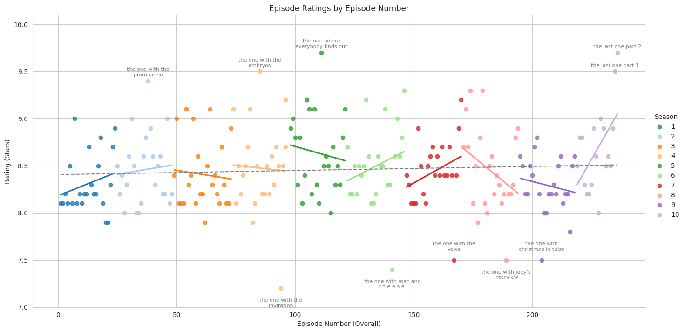
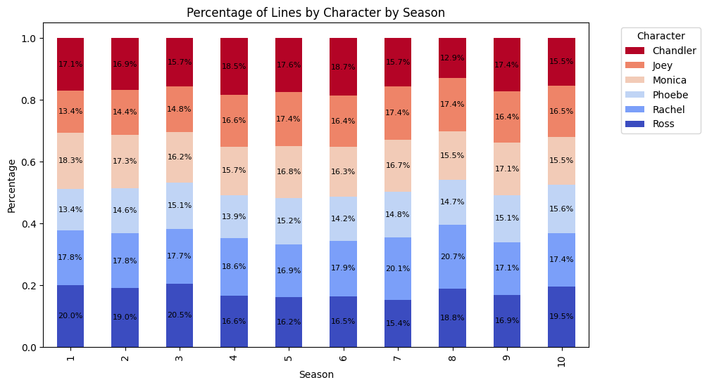
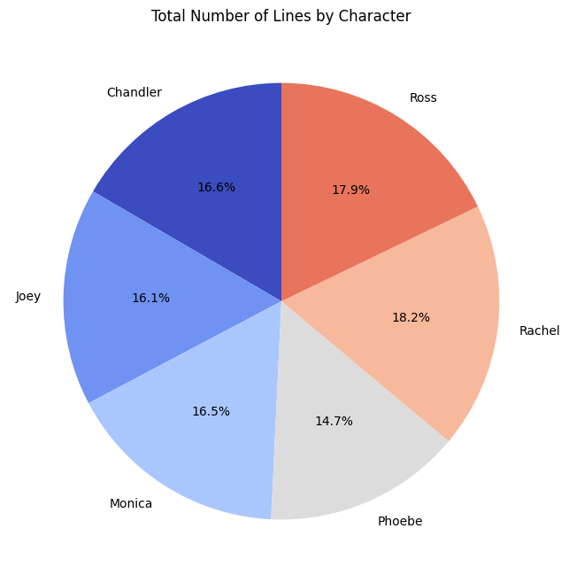
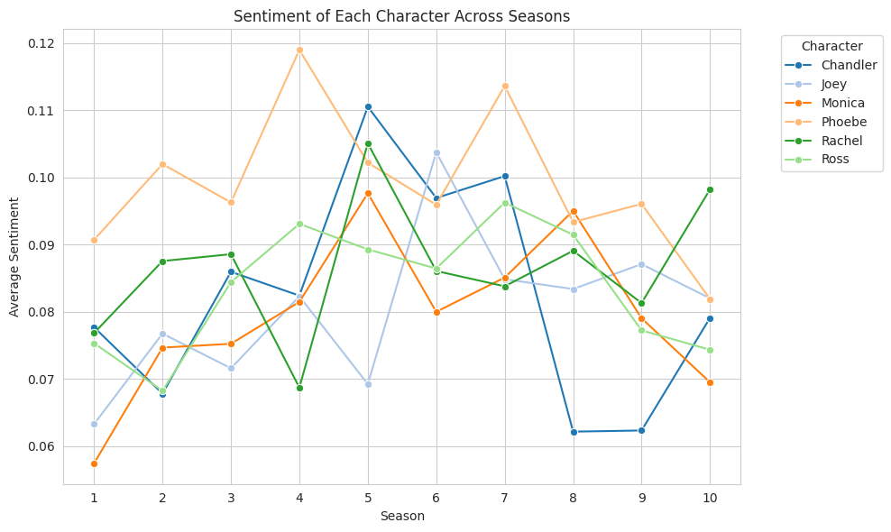
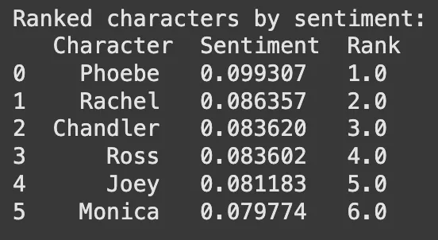
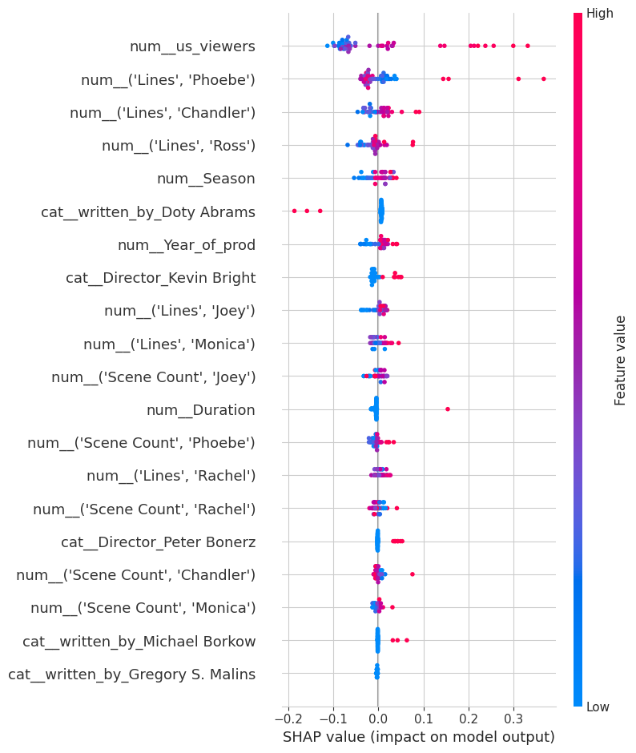

Introduction
In a truly-millennial fashion I decided to showcase some of my Data Science skills by looking at the dialogue from the TV Show “Friends” to extract information about the main characters and better understand show’s ratings.
I used Pandas, NumPy, Matplotlib and Seaborn for data analysis and visualisation, NLTK for NLP and sckit-learn to understand the importance of various features of the show in shaping episode ratings.
I used the txt files available on Kaggle alongside IMBD data to collate the insights. I converted lines across all episodes into a Pandas DataFrame that allowed me to count and analyse them. I focused on the main six characters. You can find more graphs in this Jupyter notebook.
The entire project can be found in this GitHub repo alongside helper functions and the raw txt files.
Episode Ratings
I looked at IMDB episode ratings across all seasons in the US. Top five and bottom five episodes have been labelled with their titles. Overall, the final season has seen the steepest increase in ratings, while the steepest decrease can be seen in season 8. All episodes have an above 7.0 ratings and the vast majority scored over 8.0.
Season 9 has the lowest average, which I personally can understand with the misguided arc of Rachel & Joey’s romance, and Chandler spending a lot of that season in Tulsa.
Unsurprisingly, some of the most iconic episodes (e.g. The One Where Everybody Finds Out or the Series finale) have the highest scores.
Main Character Lines & Scenes
The number of lines and scenes each main character was in varies across the episodes, with the show giving more lines to Ross and Rachel overall. This data in the past has been used to attempt and identify the “real” main characters of the show.
The total number of scenes is divided more equally between all main characters compared to the number of lines, although the differences are relatively small.
Sentiment Analysis
I used TextBlob’s sentiment polarity to investigate the sentiment of each character.
All characters’ sentiment averages over 0.05 which indicates overall positive sentiment, although it is close to the neutral range.
Some of the sentiment peaks and troughs match some of the key plot lines of the show. E.g. Rachel’s Season 4 dip can be explained by the upcoming wedding of Ross and Emily, while Phoebe’s peak that season matches with her pregnancy with the triplets. Chandler’s and Monica’s sentiments peak in Season 5 when their relationship develops.
Given the variation in the sentiment over seasons and how close they are in value, I was wondering if there is a statistical difference in the average sentiment between the main characters.
I performed an ANOVA to see if there is a significant difference. After performing Tukey’s HSD test for post-hoc comparison, I discovered that the only character with a significant difference in their sentiment is Phoebe, with (unsurprisingly for those who have watched the series) most positive sentiment. The other’s had very similar sentiment scores, with Monica being at the bottom.
Episode Rating Data Analysis
I used scikit-learn to investigate what features are good predictors of the episodes’ IMBD ratings. I looked into number of viewers (in the US), writers and directors, as well as the number of lines and scenes of each main character. I created a SHAP summary plot to better understand the importance of each feature.
A few words on how to interpret SHAP summary plots:
- Feature Importance is shown on the Y-axis, with the features at the top being the most influential in predicting the model’s output, while those lower down are less important.
- The SHAP value (impact on model output) is shown on the X-axis. Positive SHAP values indicate a positive impact on the prediction (raising the rating), while negative SHAP values indicate a negative impact (lowering the rating).
- The colour represents the feature’s value, ranging from blue (low) to red (high). For example, for num__us_viewers, red dots on the right indicate that high US viewership is associated with higher ratings, while blue dots on the left suggest low viewership correlates with lower ratings.
- Each dot represents a SHAP value for an individual episode. A wide spread of dots along the x-axis indicates that the feature’s impact on ratings varies significantly across episodes.
Key Insights
- High Viewership (num__us_viewers) is the strongest predictor of positive ratings.
- Phoebe’s and Chandler’s Lines (num__('Lines', 'Phoebe') and num__('Lines', 'Chandler')) also appear influential, suggesting that episodes where these characters have more lines tend to have distinct impacts on ratings, though the direction varies (indicated by the spread on both sides of 0).
- Directors and Writers: Specific writers or directors have modest but consistent effects, perhaps due to the style or storyline choices associated with them.
And now we can re-watch the show with a newly found awareness of some of the data behind it.